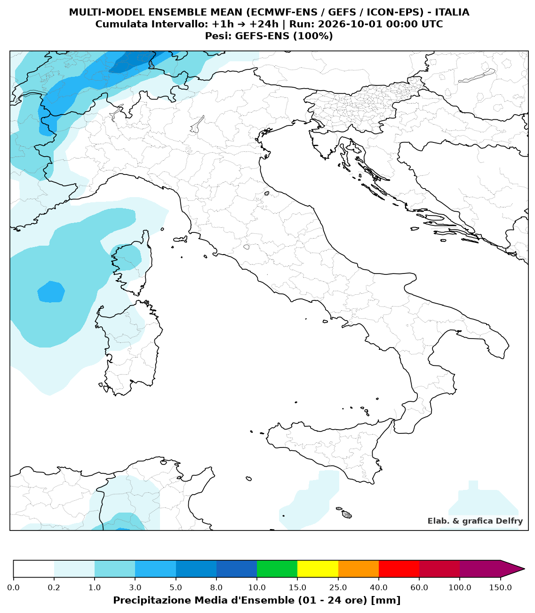
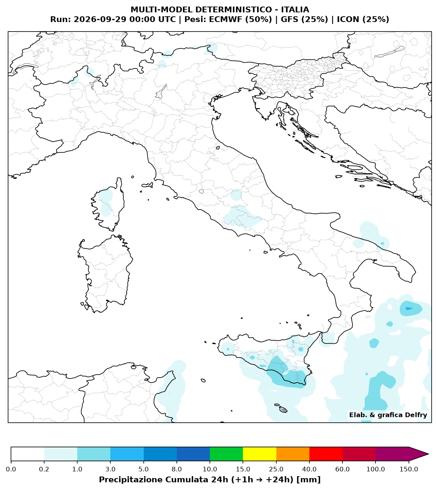
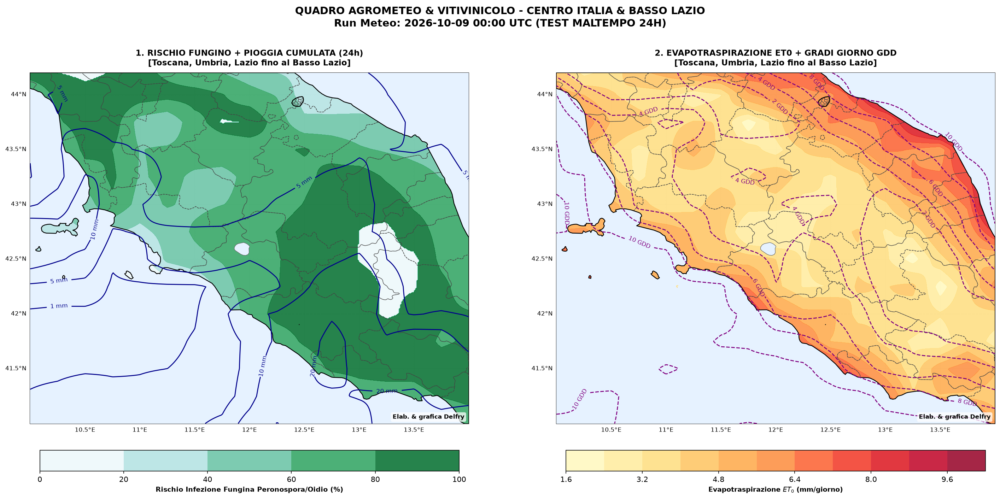
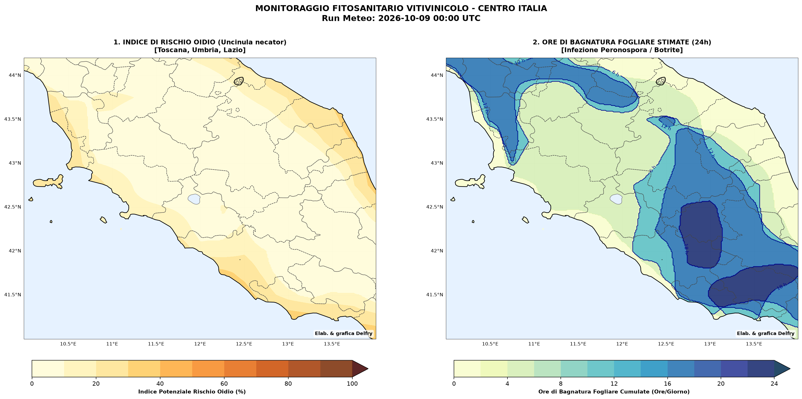
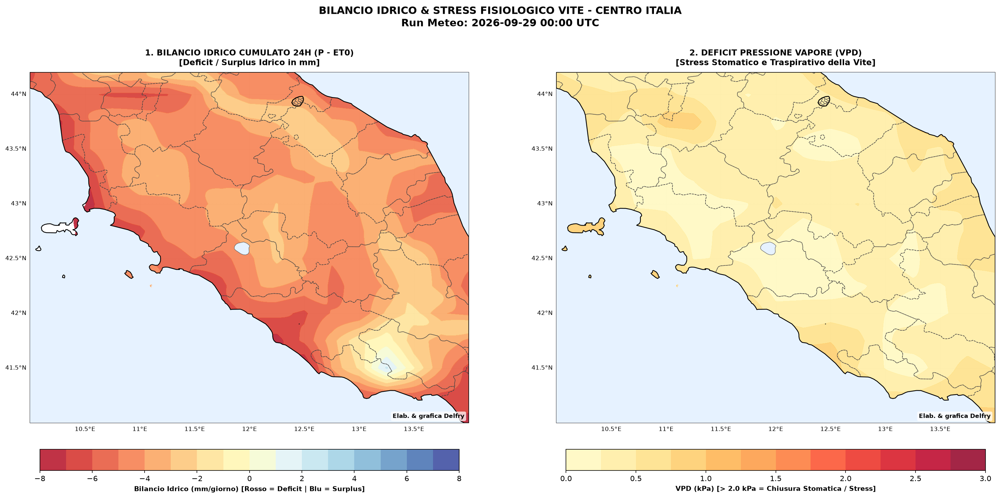
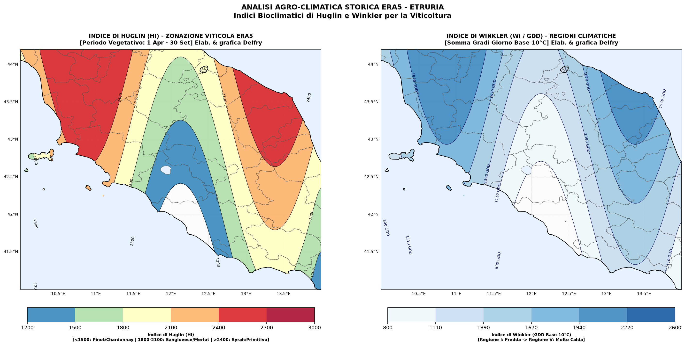

Previsioni Multi-Modello, Monitoraggio Agro-Meteo, Difesa Fitosanitaria e Bilancio Idrico

Media pesata delle simulazioni probabilistiche d'ensemble: 50% ECMWF-ENS, 25% GEFS e 25% ICON-EPS.

Combinazione dei principali modelli deterministici: 60% ECMWF IFS e 40% GFS.

Rischio infezione fungina, pioggia cumulata, Evapotraspirazione (ET0) e Gradi Giorno (GDD).

Stima del rischio di sviluppo per Oidio (Uncinula necator) e conteggio delle Ore di Bagnatura Fogliare (LWD) nelle 24 ore per la prevenzione di Peronospora e Botrite.

Mappa del deficit/surplus idrico (mm/giorno) combinata con il valore di VPD (kPa) per identificare situazioni di stress stomatico e blocco traspirativo della vite.

Indici bioclimatici storici di Huglin (HI) e Winkler (WI) per la viticoltura.